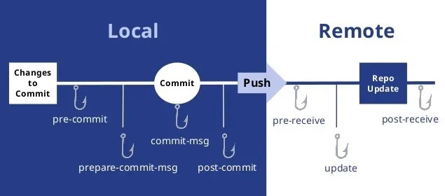

Git Hooks
This is a page that will contain more information about Git Hooks.
Introduction
Git hooks are scripts that are run alongside to some events that happen in a Git repository. The hooks may be used for various workflow purposes, such as deploying new code, linting code, checking errors etc.
Installation
To install the hooks, simply have a look at the .git/hooks folder inside the repository. This folder should be already be present in an existing repository with a few examples. The sample programs are simple Linux shell scripts (identified by the #!/bin/sh so-called shebangs). The shebang determines the actual type of the script, some other examples of the shebangs include #!/bin/bash and #!/usr/bin/env python3.
To ensure that the hooks are runnable, run chmod +x <script-name> in the directory. This will update the file permissions for the script.
Hook scopes & distribution
Hooks are used in both local and server Git repositories and are not copied to the remote by default. This means that every developer working on a specific project may locally define their own scripts they want to run, matching their personal preferences. Still, there are two ways to share the local hooks with the team:
- Put the hooks into a separate folder. Simply create a normal folder for the hooks and treat the scripts just as regular repository files. Optionally, it is possible to create a Linux symlink to the
.git/hooksdirectory (this means that the directory has 2 or more paths which it resides on, but in reality, the directory is stored just once). This means all of the files will be updated automatically. - Use the Git template folder directory, which may be set up via the
$GIT_TEMPLATE_DIRenvironment variable or via configuring Git. This will also update the hooks automatically.
We will talk about the server hooks later.

Local hooks
As already mentioned, the hooks can be modified by the contributor. Local hooks run on your local machine and only apply to the repository in which they are installed. These hooks enable you to maintain consistency and automate specific actions in your local repository.
Some of the most used local hooks are:
- pre-commit
- prepare-commit-msg
- commit-msg
- post-commit
- post-checkout
- pre-rebase
Pre-Commit
The pre-commit hook is naturally linked to the git commit command. It is executed before the user types in a commit message. The hook serves to check the snapshot to be committed to ensure your commits meet some (formal) requirements or it does not break any existing functionality.
If the script in the pre-commit hook returns a non-zero exit code, the commit is aborted.
This example of a pre-commit hook prevents incorrect authors from committing and checks the signing key:
#!/bin/bash
PWD=`pwd`
globalEmail=`git config --global --get user.email`
signingKey=`git config --global --get user.signingkey`
workEmail="example@axosoft.com"
if [[ $PWD != "*demo*" && $globalEmail != $workEmail ]];
then
echo "Commit email and global git config email differ"
echo "Global commit email: "$globalEmail""
echo "Committing email expected: $workEmail"
exit 1
elif [[ $signingKey -eq "" ]];
then
echo "No signing key found. Check global gitconfig"
exit 1
else
echo ""
exit 0
fi
Prepare-Commit-Message
Runs in between the default log message creation and editor popping up. It is used to populate the text editor with a automatic commit message.
The user is required to specify 1-3 parameters in prepare-commit-msg:
-
The name of the file that contains the commit message
-
The source of the commit message (message, template, merge, squash or commit)
-
The hash of the relevant commit
Commit-Message
The commit-msg hook is executed after the user enters a commit message. Its main purpose is to ensure that the commit messages are in consistency with other developers. It can be used to enforce specific message formats or issue tracking conventions. Only one argument is passed to this hook, and that is the name of the file that contains the desired commit message.
If prepare-commit-msg and commit-msg hooks exit in a non-zero status, the commit is prevented.
Post-Commit
This hook is called after a commit has been successfully made. It takes no parameters, and is often used for notifications. Note that this hook cannot affect the outcome of a git commit, which means that even a non-zero exit status will not terminate it.
Post-Checkout
The post-checkout hook is called after a git checkout or git switch operation has been run. It takes three parameters:
-
The ref of the previous HEAD
-
The ref of the new HEAD
-
A flag indicating whether the checkout was a branch checkout or a file checkout
Pre-Rebase
The pre-rebase hook is executed before the git rebase operation is completed. It is used to prevent or customize the rebase process, ensuring it complies with the project's guidelines. Two arguments are passed to the pre-rebase script:
-
The upstream branch from which the series was forked
-
The branch being rebased
Server hooks
Server hooks have their place in server repositories. Their job mostly is to enforce some code standards by checking the pushed commits.
There are 3 server-side hooks which trigger the scripts:
-
pre-receive -
update -
post-receive
Pre-Receive
The Pre-receive hook is run everytime an user uses git push to push their commits to the remote repository. This hook runs just once, just before any branch refs are updated. This is the stage where non-conforming commits may be rejected by the server, this includes running code errors, warnings, linting issues, wrong commit messages etc. The script has no parameters and is invoked with <old-ref-value> <new-ref-value> <ref-name> on each line of the standard input, which may be parsed by the server.
An example of a pre-receive bash script follows:
#!/bin/bash
set -e
while read -r oldrev newrev refname; do
echo $oldrev $newrev $refname
done
Update
The Update hook is invoked after the pre-receive script finishes. It is invoked separately for each pushed branch, so for three pushed branches, the update script is invoked three times. The same three arguments are passed to the script, but differently from pre-commit, update does not ready from the standard input.
Post-Receive
The Post-receive hook is invoked after a successful git push operation which means it may be used for post-push cleanup or notifications (typically e-mails). It does not receive any arguments, but like the pre-receive script, it may read the same values from standard input.
Connection to CI/CD (bonus)
As a bonus, we may notice that Git hooks are somehow similar to CI/CD (continuous integration & deployment). CI/CD scripts typicall runs code builds, tests and deployments after successful pushes. Many Git online services provide this behaviour including GitHub and GitLab with options to run much more complicated things using Docker containers. This creates an opportunity for highly-automated development. As this is out of the scope for this project, we highly recommend to check it out yourself (e.g. here).
Summary
Git hooks provide a way to run scripts based on various Git actions. They are put into the .git/hooks repository and based on their name they are invoked with certain actions. There were introduced two main types of hooks, local and server-sided. In the end, we have briefly introduced the reader to the topic of CI/CD.